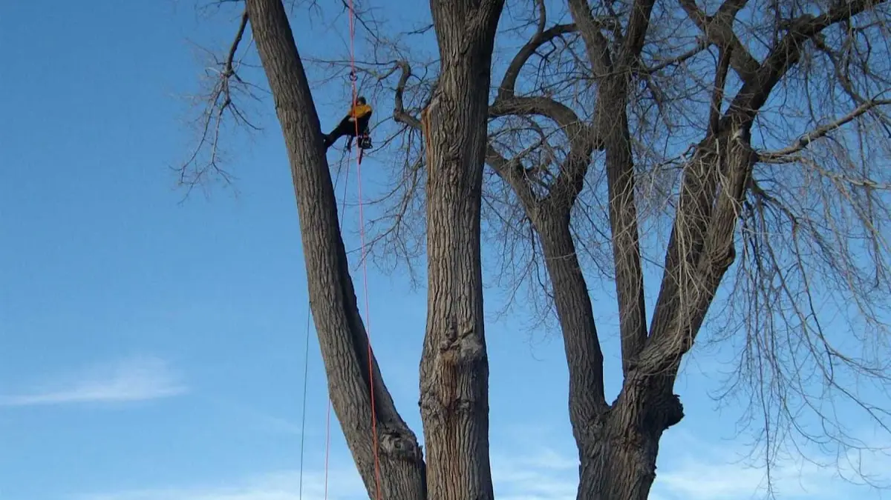
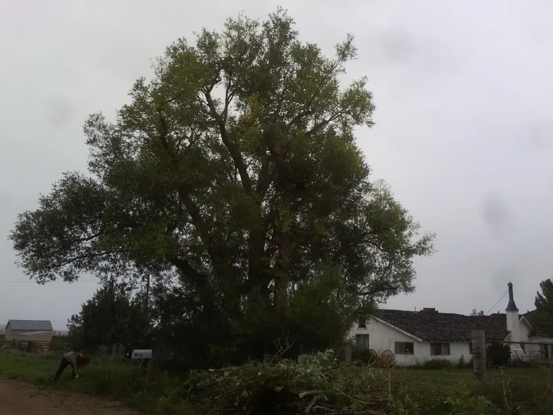
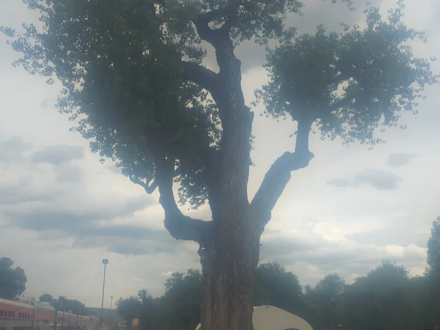

Tree Removal
Safe, controlled removal of dead, damaged or hazardous trees — including tight spaces near homes, fences and power lines, with full clean-up.
Our most-requested service
Removals, precision pruning, stump grinding and tree health care across Cañon City and Fremont County. Honest assessments, no over-promising, and a clean job site every time.
From a single overgrown limb to a hazardous removal beside your house, every job gets the same careful assessment and clean follow-through.
Safe, controlled removal of dead, damaged or hazardous trees — including tight spaces near homes, fences and power lines, with full clean-up.
Our most-requested serviceStructural pruning and crown thinning that protects a tree's long-term health and shape — never topped, never over-cut.
Honest diagnosis of stressed or struggling trees, deadwood removal and guidance on what's worth saving — and what isn't.
Grind old stumps below grade so you can reclaim the space, replant, or finish a clean landscape with no trip hazard left behind.
Cracked limbs and storm-damaged trees that can't wait. We answer the phone early and late, six days a week.
Clearing overgrowth, brush piles and unwanted trees to open up a lot — hauled away and left tidy when we're done.

The name "tree surgeon" is the standard, and it's the right one for how this work is done in Cañon City: assess carefully, cut only what needs cutting, and protect the trees that are worth keeping. Customers come back because the advice is honest and the work holds up.
Every quote is grounded in what's actually in front of us — not an upsell. If a tree can be saved, you'll hear it. If it's a hazard, you'll hear that too.
Local, careful, and easy to get hold of — the things that matter most when a tree needs attention.
You get the real story on every tree — what's healthy, what's a risk, and what it'll take to fix.
Open 7 AM to 9 PM, six days a week — easy to schedule around work and daylight.
Based right here in Fremont County and familiar with the trees and conditions in our area.
Repeat customers and a 4.6-star track record built on jobs done properly, not quickly.
A simple, no-pressure process — most jobs start with a quick look and a clear price.
Tell us what's going on with your trees by phone or the quick estimate form.
We assess the tree, talk through your options, and give you an honest, upfront price.
We set a time that works for you and do the job safely and carefully.
Limbs, brush and debris hauled away — the site left tidy before we leave.
A few notes from our Google reviews — real people, real jobs.
“We've worked with Justin for years now, and he is the best. Never over-promises, loves trees and cares about his customers. And has the highest integrity!”
“Help us out here at Zerby Automotive whenever we need it. Great company, awesome service.”
A look at the kind of mature trees and removals we handle locally.

Based in Cañon City and working throughout the surrounding Fremont County communities. Not sure if you're in range? Give us a call — we'll let you know.
Yes. Call or send the quick form and we'll arrange a look at your trees and give you an honest, upfront price — no obligation.
We're reachable 7:00 AM to 9:00 PM, Monday through Saturday. Closed Sundays. The long hours make it easy to schedule around work and daylight.
Always. Limbs, brush and debris are hauled off as part of the job, and we leave the site tidy before we go.
Yes — tight removals near homes, fences and structures are a big part of what we do, using roped, controlled cuts to protect your property.
Sometimes yes, sometimes no — and you'll get the honest answer either way. We assess what's stressing the tree and tell you straight whether it's worth saving.
Yes. We grind stumps below grade so you can replant or reclaim the space, with no trip hazard left behind.
Tell us what's going on and we'll take a look. Honest assessment, upfront price, no pressure — that's how every job starts.
Open 7 AM–9 PM · Monday through Saturday · Cañon City, CO